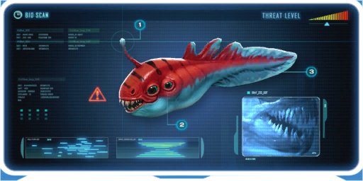

Os mordedores são pequenos predadores, extremamente rápido e territorial que eventualmente emitem sons de mordidas e rangidos (pode ser escutado clicando na imagem acima), essas criaturas atacam o jogador imediatamente quando próximos, e cada uma de suas mordidas causam 7 de dano.
Os mordedores assim como outras criaturas carnívoras comerá da mão do jogador caso um peixe (vivo ou morto) seja oferecido.
Essas criaturas comem cadáveres de qualquer peixe (incluindo de sua própria espécie), o que fará que o cadáveres suma rapidamente.
Possui uma versão alternativa encontrada nos biomas de Algas Sangrentas, conhecida como Lamparina.
Registro do banco de dados

Seu registro no Pda informa que 94% de seu corpo é músculo, 4% é de tecido conjuntivo e apenas 2% de cérebro, quase sempre tem fome.
Sua estrutura corporal possui:
Antena olfativa especializada
A antena na cabeça dos mordedores servem para detectar flúidos na água à uma distancia impressionante.
Par extra de olhos
Esses 2 olhos extras nas laterais provavelmente servem para ter uma visão periférica de predadores e ameaças.
Barbatana da cauda superdesenvolvida
Essa cauda é usada visando a velocidade de um conjunto de mordedores, juntos, podendo sucumbir qualquer presa em até 100 vezes o peso de um mordedor.
Dados relevantes
Os mordedores possuem comportamento catémero, ou seja, são ativos durante o dia e noite.